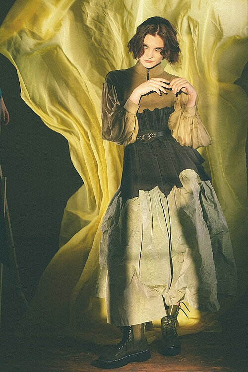
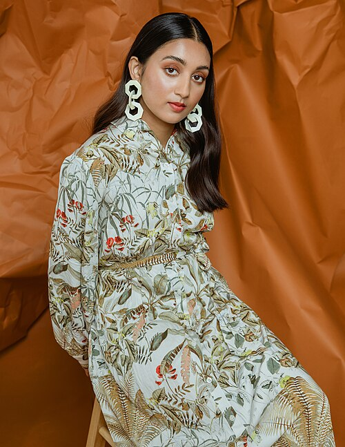
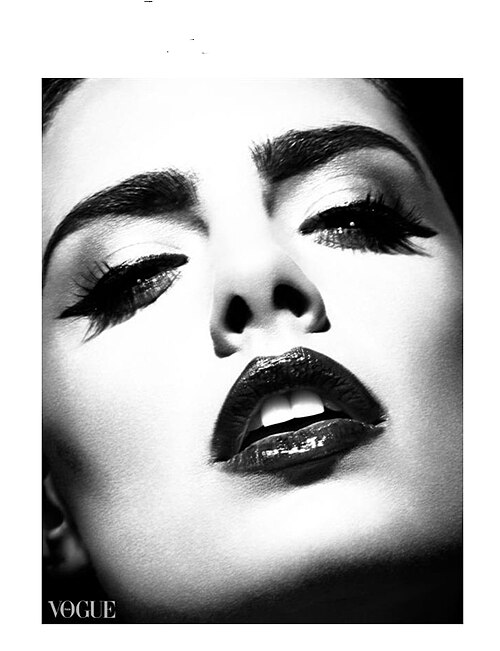

Translucent

The Fashion Frame
Explore fashion photography and creative visual stories.
Home | Models | Rankings | Agencies | Editorials | Events | Profiles | Contact us
A fashion editorial is a collection of photographs that communicates a fashion idea, theme or creative story. Editorial photography is commonly published in magazines and digital fashion platforms.




Fashion videos and runway presentations help audiences explore collections, designers and creative direction.
Visit Vogue to discover more fashion stories and editorials.